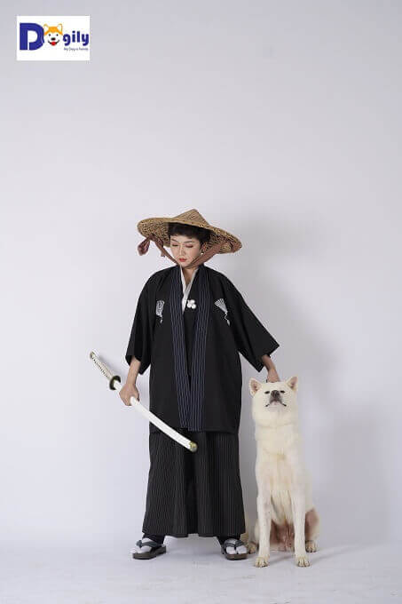

Thông tin giống chó Akita Inu Nhật Bản | Giá mua bán chó Akita con thuần chủng tại Dogily Petshop ở Tphcm, Hà nội
Thông tin về giống chó Akita Inu
Chó Akita Inu một giống chó cổ xưa và cao quý. Trong quá khứ chúng được nuôi để bảo vệ hoàng gia và giới quý tộc ở Nhật Bản. Akita Inu được tuyên bố là Bảo vật tự nhiên quốc gia và Quốc khuyển Nhật Bản vào năm 1931. Giống chó này trở nên nổi tiếng trên toàn thế giới qua câu chuyện về chú chó Hachiko trung thành.
Tại Nhật Bản, giống chó này đôi khi được gọi là Ikken isshu (nghĩa là: chó một người). Chúng không quan tâm đến bất cứ ai ngoại trừ chủ nhân của mình. Giống chó này cũng nổi tiếng về lòng trung thành và sự can đảm. Chú chó Hachiko huyền thoại đợi chủ nhân, giáo sư Ueno trong suốt 9 năm, 9 tháng, 15 ngày là minh chứng rõ nét nhất cho lòng trung thành của giống chó Akita Inu. Chính nguồn cảm hứng từ câu chuyện chú chó Hachiko đã thôi thúc chúng tôi thành lập Dogily. Với sứ mệnh đem đến mỗi gia đình một chú chó trung thành, tuyệt vời như Hachiko.
Dogily và sứ mệnh phát triển giống chó Akita Inu tại Việt Nam
Giá trị của giống chó này tiềm ẩn trong tính cách và tinh thần như một kiếm sỹ Samurai. Điềm tĩnh, không hề sợ hãi và sẵn sàng đối đầu với hiểm nguy. Nhưng lại rất thân thiện, tình cảm với con người và luôn sẵn sàng chiến đấu để bảo vệ chủ nhân và gia đình. Tại Việt Nam giống chó này được nhập khẩu về khoảng 10 năm trở lại đây. Tuy nhiên, do những quy định hạn chế xuất khẩu của chính phủ Nhật Bản. Cũng như mức giá chó Akita Inu rất cao. Nên việc sở hữu Quốc khuyển Nhật Bản vẫn là mơ ước của nhiều người.
Giá bán chó Akita tại Dogily Petshop ở Tphcm & Hà Nội. Kinh nghiệm mua bán chó Akita thuần chủng, giá rẻ?
Giá bán chó akita inu nhập khẩu đương nhiên cao hơn chó sinh tại Việt Nam. Do mặt bằng giá chó tại các trại nước ngoài luôn giữ ở mức rất cao. Và họ luôn chú trọng nâng cao chất lượng con giống, quy trình chăm sóc. Để có thể đảm bảo cho ra những đàn chó con chất lượng. Cộng chi phí vận chuyển hàng không, hải quan, kiểm dịch. Vì vậy, giá chó Akita nhập khẩu về đến Việt Nam thường cao hơn từ 3-5 lần so với chó sinh sản trong nước.
Giá chó akita con nhập khẩu có phả hệ bố mẹ, ông bà vô địch cấp thế giới, châu lục cũng cao hơn chó có phả hệ bình thường. Độ chênh lệch về giá có thể từ 1-5.000 usd/bé. Giá chó nhập khẩu từ Nhật Bản cũng cao hơn so với nhập từ châu Âu hoặc Thái Lan. Do các quy định nghiêm ngặt của Nhật hạn chế xuất khẩu ra nước ngoài. Do lo ngại việc lại tạo với các giống có ngoại như đã từng xảy ra với American Akita.